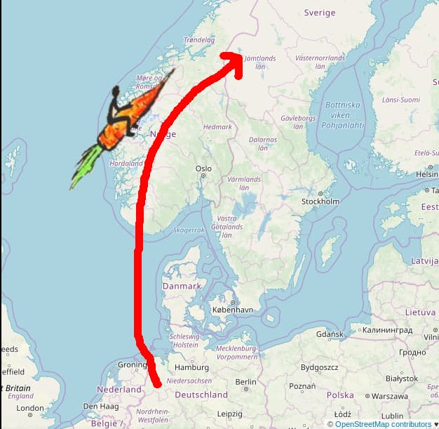
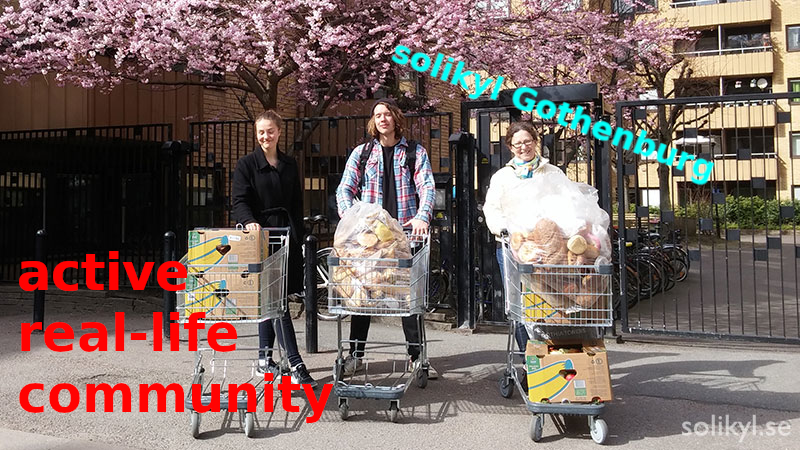
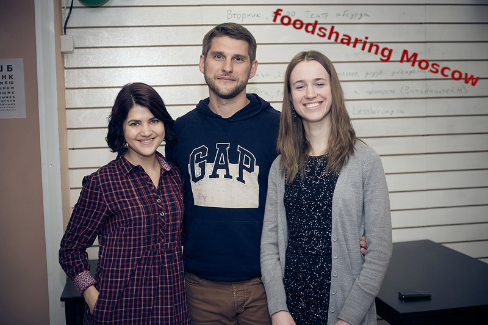
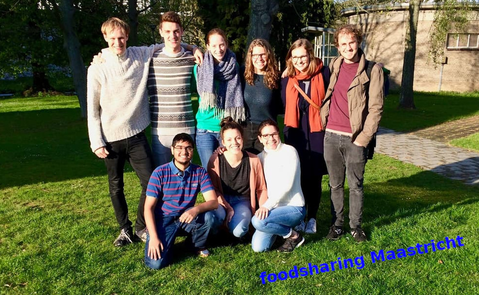
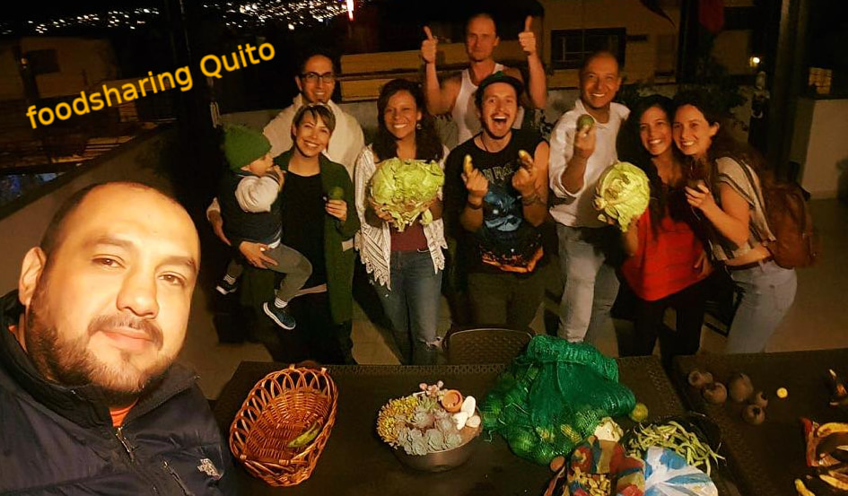
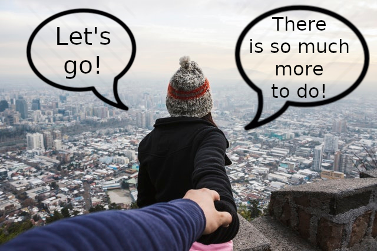
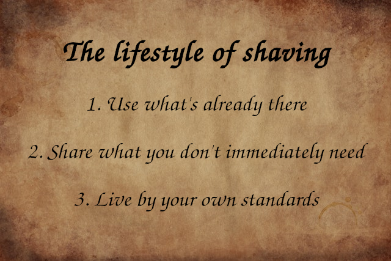

# The foodsaving grassroots movement _the authors_ --- # Agenda 1. Introduction 2. Deep-dive 3. ... --- # Introduction _nothing here yet_ --- # foodsharing.de ??? - saving food before it's thrown into the bin - distributing it unconditionally to whoever can make use of it - grew big in German-speaking countries over the past 6 years - 50k foodsavers, 5k cooperating stores of all sizes - foodsavers in the audience? --- # User story:<br>foodsharing Östersund <div style="text-align: center">  </div> ??? - Teddy from Germany is a very active foodsaver going to Sweden for her studies - She wants to spread the idea of foodsaving in her new city Östersund (50k inhabitants) - She holds two info events to gather like-minded people (only 4-6 people show up) - She creates two facebook groups to gather interested people and fellow foodsavers respectively - She contacts stores to build up cooperations - She contacts us and asks for help setting up a group on Karrot - As soon as the cooperations are established the stores and pickups are put up on Karrot and people can sign up there --- # What Karrot doesn't do <div style="text-align: left"> </div> <div style="text-align: center"> <b>vs.</b> </div> <div style="text-align: right">  </div> ??? - Most work happens offline! - Karrot doesn't help you find potential foodsavers - Karrot doesn't help you establish cooperations with stores - Karrot doesn't help you get off your chair to actually do a pickup - Karrot doesn't help you distribute huge amounts of saved food --- # Yay community! :D <div style="text-align: center">  </div> ??? - You need people working together for this to function - Everything is more fun if you do it together with friends - What is more fun is more stable, as you'll keep on doing it --- # How to find friends <div style="text-align: center">  </div> ??? - With a common goal and a plan! - Just get out there and call for action, they'll show themselves! - Start with info events and communal cooking to spread the word, continue with building FSPs and cooperations - A core group of maybe 5 foodsavers is more than enough for starters. - People need to get to know each other! - Organize activities that are fun _and_ pr at the same time - Hangouts, brunches, communal cooking, movie screenings --- # With a core group... <div style="text-align: center">  </div> ??? - Foodsaving becomes a hobby and a lifestyle - Environmental and social reasons for foodsaving create a culture that can more easily spread and maintains itself - More people feel motivated and empowered to get further involved - More growth is possible: info stands, distribution events, festival participation --- # Catalyst effect <div style="text-align: center">  </div> ??? - People learn that they can actually make a change if they just go out and _do_ something - As soon as you have a group of dedicated foodsavers who share the same ideals, you have a group of activists - Many more similar topics in the sense of zero waste, upcycling, repairing and general environmentalism - And many more similar forms of countering these: - Free shops and free markets, repair cafes, skill sharing sessions, etc. --- # Internalization <div style="text-align: center">  </div> ??? - portmanteau of saving and sharing - 'use what's already there' - get active to find it, to understand it, to make it accessible and useful again - 'share what you don't immediately need' - regain control over your desires, conquer your greed, understand that you are not your possessions - 'live by your own standards' - reject normality as a value in itself, form independent opinions